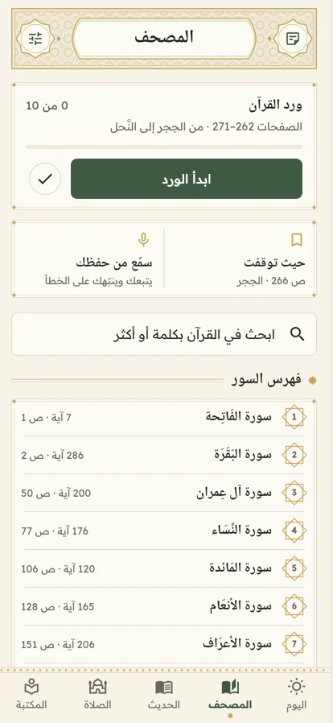
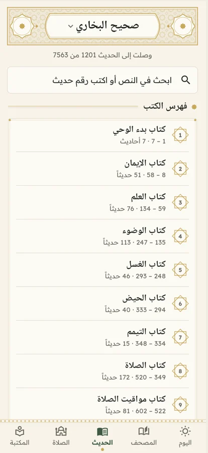
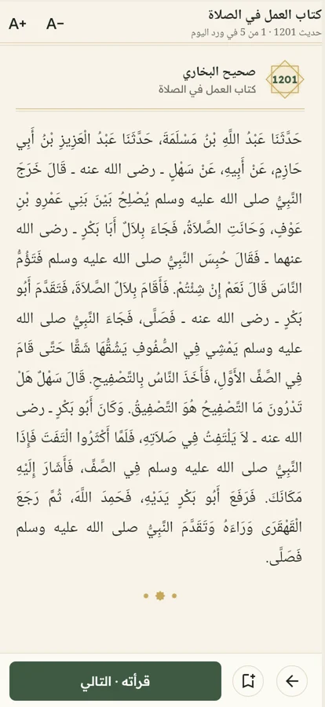
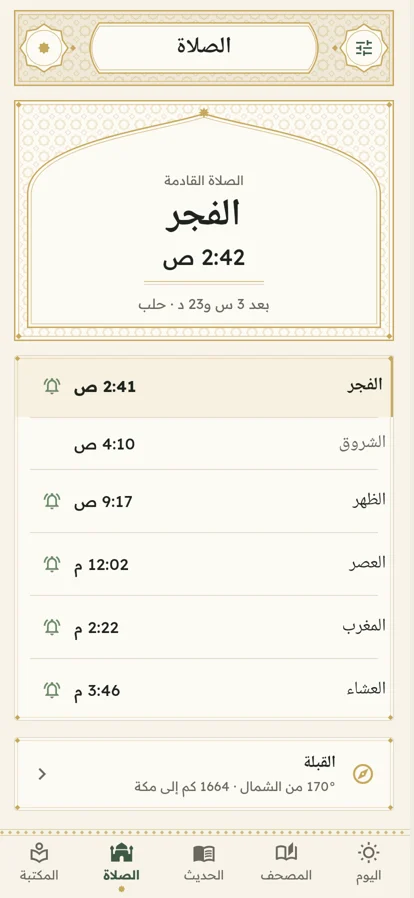
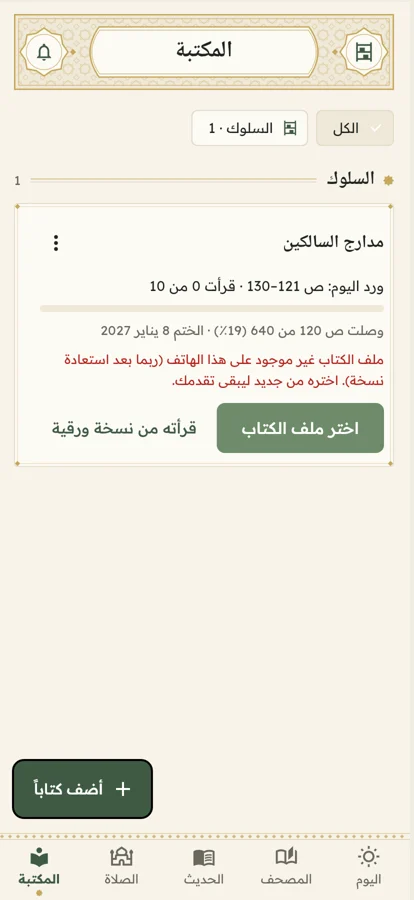
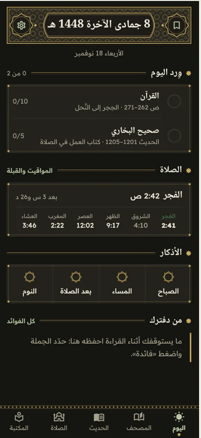

المصحف
نص مجمع الملك فهد برواية حفص وخطه، صفحة على قدر الشاشة، مع فهرس السور والبحث بكلمة، وورد للحفظ والمراجعة.
وردك اليومي من القرآن الكريم والحديث الشريف، في هاتفك.
مصحف بخط حفص، والكتب الستة، وأذكار حصن المسلم، ومواقيت الصلاة، وتسميعٌ يتابع تلاوتك كلمةً كلمة. كل ذلك يعمل دون إنترنت.
تفتح ذِكرى فتجد ورد اليوم جاهزاً: كم صفحة من المصحف، وكم حديثاً، وكم صفحة من كتابك. تعلّم ما قرأت، فيحفظ التطبيق موضعك ويكمل منه غداً.
نص مجمع الملك فهد برواية حفص وخطه، صفحة على قدر الشاشة، مع فهرس السور والبحث بكلمة، وورد للحفظ والمراجعة.
اقرأ من حفظك فيتبعك التطبيق في المصحف، ويُظهر الكلمة التي أخطأت فيها أو أسقطتها.
صحيح البخاري ومسلم والسنن الأربع، مقسّمة على الكتب، مع ورد يومي من الأحاديث وبحث في النص أو برقم الحديث.
أذكار الصباح والمساء وبعد الصلاة والنوم من حصن المسلم، بعدّاد لكل ذكر وتذكير في وقته.
مواقيت الصلاة تُحسب على هاتفك من موقعك أو من مدينة تختارها، مع تنبيه لكل صلاة، وبوصلة للقبلة.
أضف كتبك بصيغة PDF ورتّبها على رفوف، وحدّد لكل كتاب ورداً يومياً يحسب لك متى تختمه.
ما يستوقفك أثناء القراءة احفظه فائدةً مع مصدرها، وتظهر لك فائدة كل يوم على الشاشة الرئيسية.
التاريخ الهجري بجانب الميلادي في رأس الصفحة، وإحصاءات تريك أيام انتظامك على الورد.
وضع داكن هادئ للقراءة قبل النوم، وحجم خط تكبّره أو تصغّره كما يريحك.
التنبيه آلي وقد يخطئ، ولا يغني عن القراءة على شيخ. إن عدّ كلمة خطأً وقد قرأتها صحيحة فاضغط عليها وارفع التنبيه.





